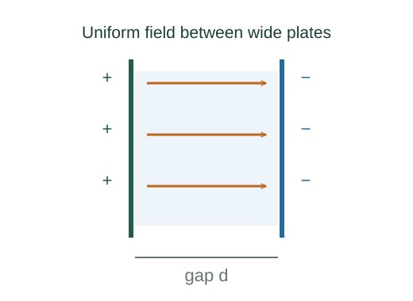

Derive energy stored in a capacitor
Charging a capacitor becomes progressively harder as its voltage rises. Integrating the small work needed to transfer each increment of charge gives the factor one half.
What the symbols mean
C: constant capacitance; q: temporary charge magnitude during charging; Q: final charge magnitude; ΔV: final voltage magnitude.
When this applies
A linear capacitor with constant geometry and permittivity, charged quasistatically from zero charge. This calculates stored energy rather than circuit dissipation.
Developing the argument

Track the voltage while charging
At an intermediate charge q, the voltage is q/C, not its eventual final value.
Transfer a small additional charge
Moving dq against that potential difference requires differential work ΔV(q)dq. Reversible charging stores it as field energy.
Integrate from empty to full
The integral of q gives Q²/2. Substitute Q = CΔV to obtain the equivalent forms.
A closer lookWhy does a linearly growing quantity give a factor ½? ↗Why an integral accumulates a rateExpress it as field energy density
For parallel plates, use C = εA/d and ΔV = Ed. The resulting total energy is proportional to the gap volume Ad.
A worked example
A 10 μF capacitor at 12 V stores ½ × 10⁻⁵ × 144 = 0.00072 J.
Derivation behind this calculation ↗A point to keep straight
A fixed-voltage source supplies QΔV during simple resistive charging; only half is finally stored in an initially empty ideal capacitor.
Check the assumptions and derivation ↗